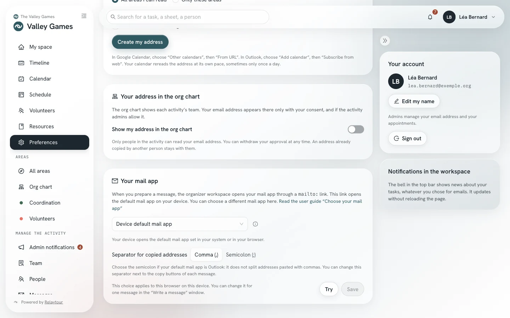
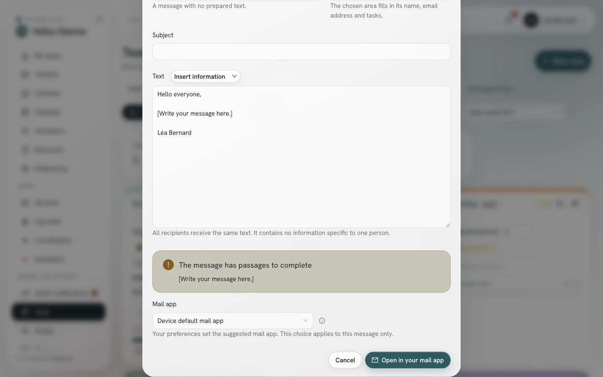

You prepare a message in Relaytour, then send it from your own mail app. This guide explains how Relaytour opens that mail app, and how you choose the one that opens.
This guide complements the “Messages to your team” section of the activity admin guide. It is meant for admins, who are the only people who write a message.
Starting point
How Relaytour opens your mail app
Relaytour sends no message. It opens your mail app through a mailto: link, which carries the recipients, the subject and the text. Your device alone decides which app answers this link: its default mail app.
A web page cannot name any other app than that one. Relaytour therefore offers two other ways: open an online mail service in a new tab, or open an app through a link specific to that app.
Eight choices
The mail apps offered
Online mail services open in a new tab, with the account already signed in to your browser. If you use several accounts, check the sender before sending.
Choice
What opens
Devices
Cc and Bcc fields
Device default mail app
The default mail app of your system, or the online mail service that your browser associates with mailto: links.
All
Kept
Gmail
A new message in Gmail, in a new tab.
All, in a browser
Kept
Outlook (work or association account)
A new message in Outlook on the web (Microsoft 365), in a new tab.
All, in a browser
Kept
Outlook.com (personal account)
A new message in Outlook.com, in a new tab.
All, in a browser
To check
Yahoo Mail
A new message in Yahoo Mail, in a new tab.
All, in a browser
To check
Proton Mail
A new message in Proton Mail, in a new tab.
All, in a browser
Kept
Gmail app
The Gmail app installed on the device.
iPhone and iPad only
To check
Outlook app
The Outlook app installed on the device.
iPhone, iPad and Android, not Mac or Windows
To check
“To check” means that the mail app’s publisher does not document this field. Relaytour passes it on, and the mail app may ignore it. The “Write a message” window reminds you of this and offers to copy the addresses.
A mail app that ignores the Bcc field exposes no address: the message opens without these recipients, and you paste them yourself into the Bcc field.
Two places
Set your choice
In your preferences
/<activity>/preferences
The “Your mail app” panel sets the mail app that Relaytour offers you for each message. Your browser keeps this choice: it applies to this browser, on this device. You can therefore choose an app on your phone and an online mail service on your computer.
Mail appChoose one of the eight mail apps. An information icon accompanies the default mail app, and a warning icon accompanies the apps. The button to the right of the field opens the explanation of the displayed choice.
Separator for copied addressesChoose the comma or the semicolon, for the device default mail app. Choose the semicolon if that mail app is Outlook.
TryOpen a test message, addressed only to you. Your address appears in the “To” and “Bcc” fields. You close this message without sending it.
Yes, the message openedConfirm the test. Relaytour cannot tell on its own whether an app answered: your answer is what counts.
SaveKeep this choice. For an app, the button stays inactive until you have confirmed a test.

The “Your mail app” panel, on the sample organization.
During the test of an app, Relaytour observes whether your browser leaves the page. If nothing happens, a warning tells you that the app does not seem to be installed.
For a single message
“Write a message” window
The “Mail app” field, at the bottom of the window, uses the choice from your preferences. You can choose another one for this message. This change does not modify your preferences.

The “Mail app” field of the window, on the sample organization. The people are fictional.
A message reopened from the message history opens in the mail app from your preferences.
Default mail app
Change your device’s default mail app
The “Device default mail app” choice opens the app that your system associates with mailto: links. If an app you do not use opens, change this setting in your system. The labels below vary slightly from one version to another.
Mac
macOS
1Open the Mail app, even if you do not use it.
2Open the “Mail” menu, then “Settings”, then the “General” tab.
3Choose your app in “Default email reader”: Outlook, Thunderbird or another installed app.
PC
Windows 10 and 11
1Open “Settings”, then “Apps”, then “Default apps”.
2Type “mailto” in the search field for link types.
3Choose your mail app from the list offered.
iPhone and iPad
iOS and iPadOS
1Open “Settings”, then “Apps”, then “Default Apps”.
2Open “Email”, then choose your app.
On an older version of the system, this setting is in “Settings”, on the line of your mail app, under “Default Mail App”.
Android phone and tablet
Android
Android asks which app to open the first time you follow a mail link. You choose your app, then “Always”.
ChangeOpen “Settings”, then “Apps”, then the app that opens today. Open “Open by default”, then clear the defaults. Android asks you again at the next message.
Linux computer
GNOME
1Open “Settings”, then “Default Applications”.
2Choose your app on the “Mail” line.
An online mail service as the default
Chrome, Edge, Firefox
Your browser can hand mailto: links to an online mail service. The “Device default mail app” choice then opens that service, with all the message fields.
Chrome and EdgeOpen your online mail service. Click the double-diamond icon on the right of the address bar, then “Allow”. You can find the setting again in the browser settings, under protocol handlers.
FirefoxOpen “Settings”, then “General”, then “Applications”. Search for “mailto”, then choose your mail service in the “Action” column.
SafariSafari does not hand mail links to an online mail service. Choose the online mail service in your Relaytour preferences.
To try
The Gmail and Outlook apps
The “Gmail app” and “Outlook app” choices open the app through a link specific to that app. Google and Microsoft do not document these links, and their behavior may change with an update.
Depending on the device
The Gmail app answers only on iPhone and iPad. The Outlook app answers on iPhone, iPad and Android. On Mac, it opens and rejects the link. On Windows, it does not open.
Depending on the field
The recipient, subject and text are kept. The Cc and Bcc fields are not guaranteed: check them in the message before sending.
Without the app
If the app is not installed, the browser does nothing or shows an error. Go back to the default mail app or to an online mail service.
Outlook on a computer
To open your messages in Outlook on Mac or Windows, set Outlook as the default mail app of your system, then keep the “Device default mail app” choice.
For these reasons, your preferences save an app only after a test confirmed on the device.
As a last resort
If nothing opens
The “Write a message” window always offers to copy the addresses, the subject and the text. You open your mail app yourself, then paste each part into a new message.
Copied addresses are separated by a comma, or by a semicolon for Outlook, which does not split a list pasted with commas. The “Address separator” choice, below the copy buttons, changes this sign for the current message.
A very long text or a very large number of recipients exceeds what a link can carry, whatever the mail app. The window then asks you to copy the text, or the addresses.